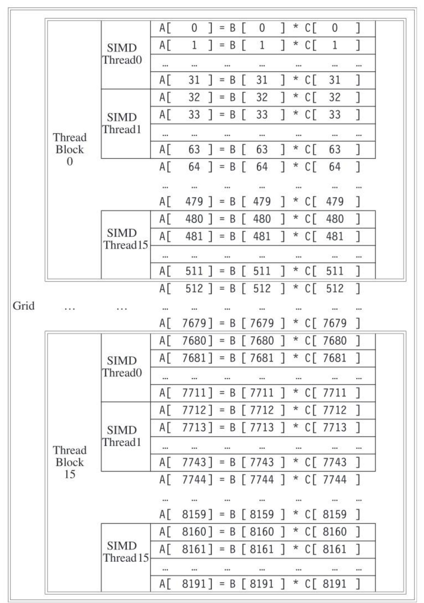
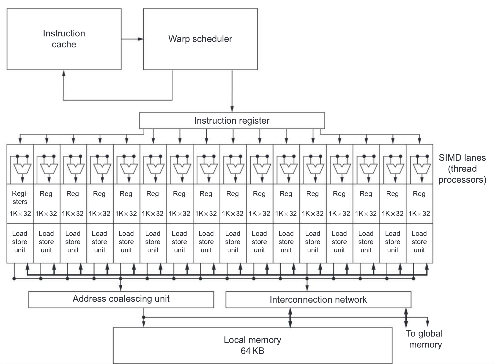
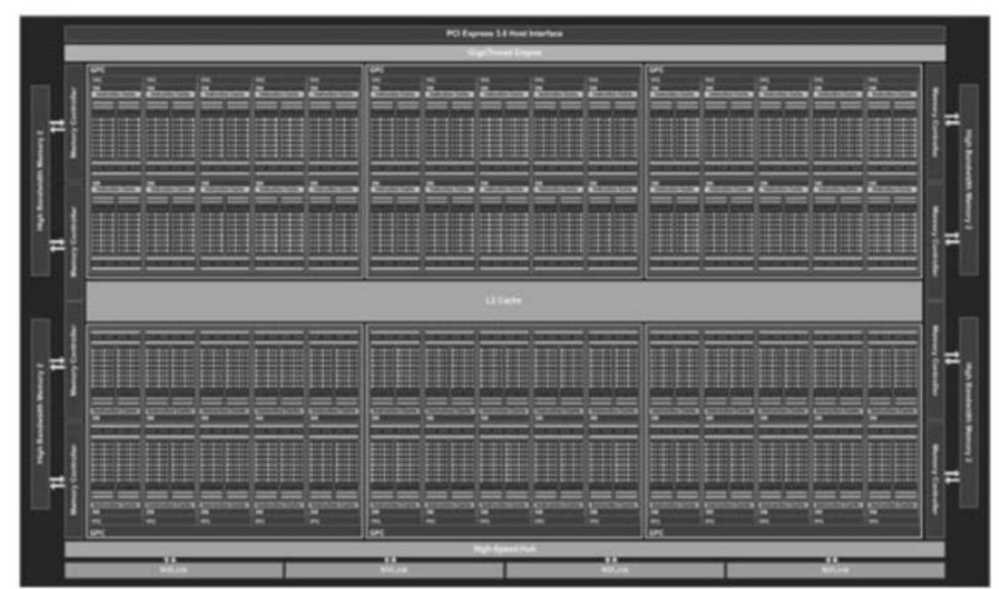
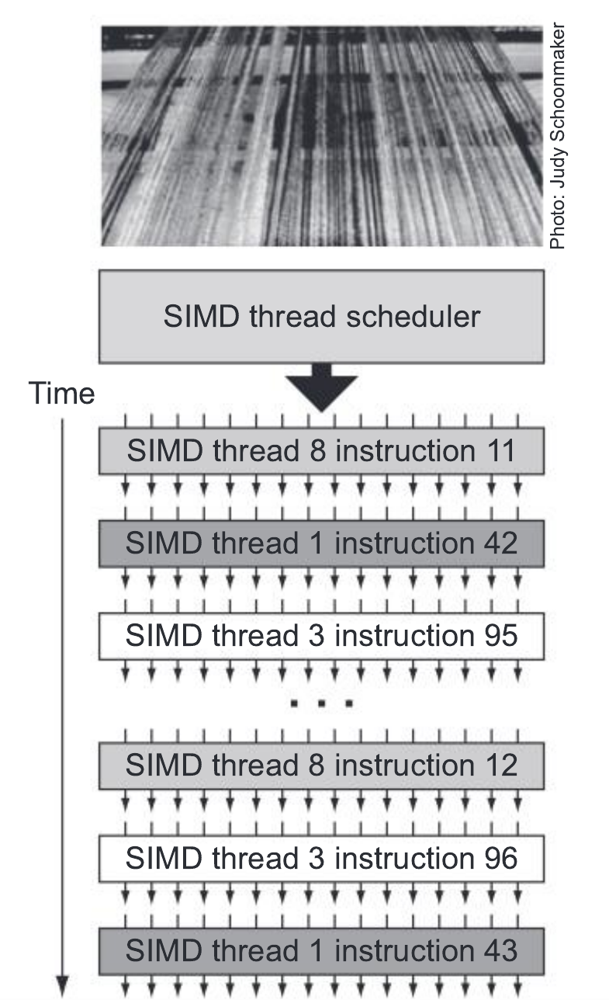
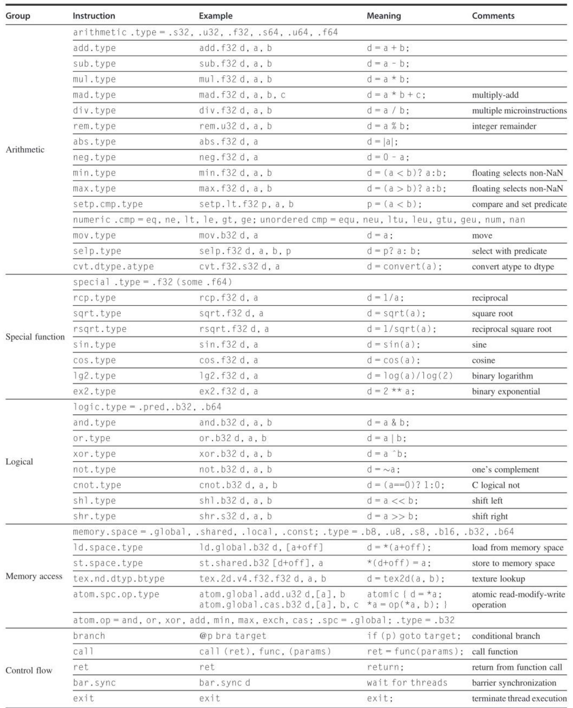
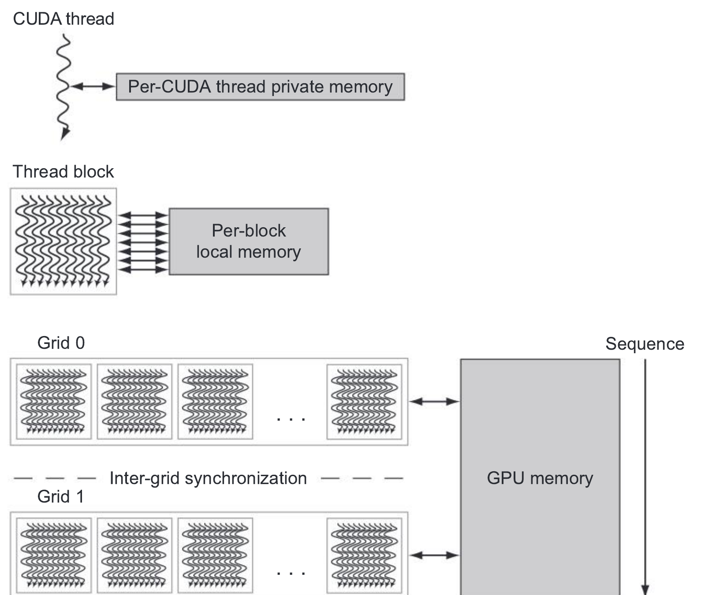
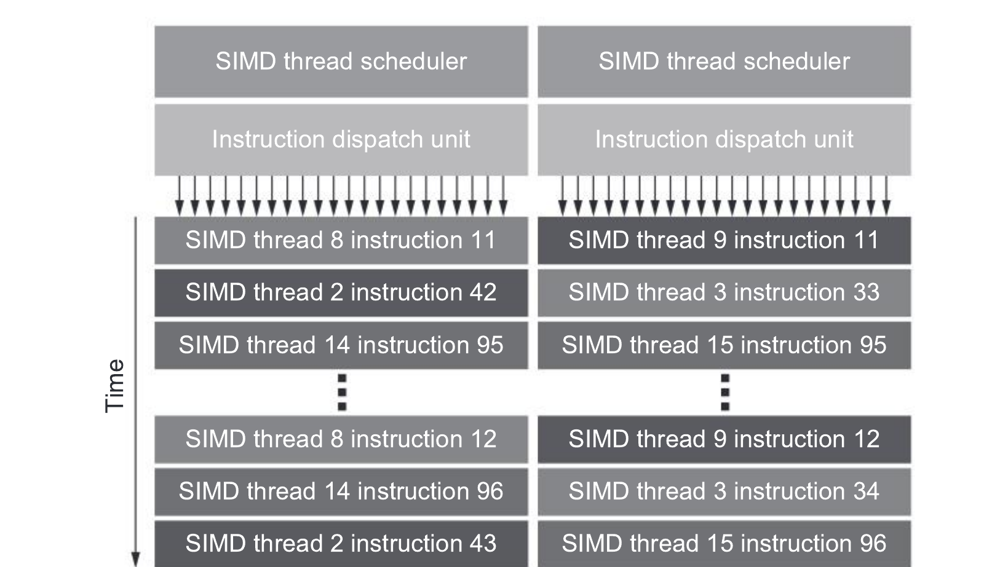
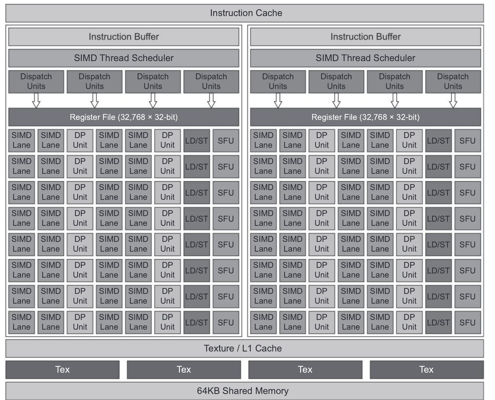
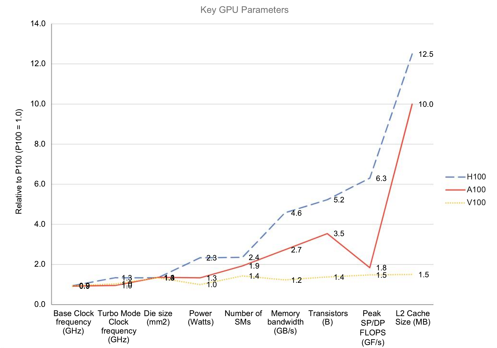

4.4 图形处理器
花几百美元就能买到一块 GPU 芯片，插到桌边的 PC 上，得到数千个并行的浮点部件。价格低、使用方便，高性能计算因此走进了许多人的手中。后来又出现了让 GPU 更容易编程的程序设计语言，两者一结合，GPU 计算便兴盛起来。
今天说到用 GPU 计算，可能指三种用途：
- 用 GPU 生成图形；
- 用 GPU 做科学计算或多媒体计算；
- 用 GPU 做机器学习计算。
在图形生成上，GPU 的地位无可争议。在科学计算和多媒体应用领域，如今许多程序员都在权衡该用 GPU 还是 CPU；例如，截至 2022 年，全球最快的 500 台超级计算机中有 30% 依靠 GPU 完成大部分计算。做机器学习（第 7 章的主题）的程序员则更倾向于 GPU。
在计算机体系结构的谱系中，GPU 和 CPU 追溯不到同一个祖先，也不存在一个能把两者联系起来的「缺失环节」。4.10 节 将会讲到，GPU 的主要祖先是图形加速器，GPU 正是为了把图形做好而诞生的。GPU 虽然在向主流计算靠拢，却不能丢掉继续出色地处理图形这一本职。因此，从架构师的角度来理解 GPU 的设计会更清楚：为了做好图形，已经投入了这么多硬件，怎样再加以补充，才能让更多种类的应用也获得更高的性能？
本节只讨论用 GPU 做计算。GPU 计算怎样与图形加速这一传统角色结合，可参阅 John Nickolls 和 David Kirk 撰写的「Graphics and Computing GPUs」，即本书作者所著《计算机组成与设计》（Computer Organization and Design）第 6 版的附录 C。
GPU 的术语和一些硬件特性与向量体系结构、SIMD 体系结构差别很大。我们认为，先介绍 GPU 的简化编程模型，再讲它的体系结构，读者会更容易理解。
GPU 编程
CUDA 为算法中并行性的表达问题提供了一个优雅的解决方案。它不能解决所有算法，但能解决的已经足够多，足以产生重要影响。它似乎在某种程度上契合我们思考和编写代码的方式，让我们能更容易、更自然地表达任务级以外的并行性。
——Vincent Natol，「Kudos for CUDA」，HPC Wire（2010）
GPU 程序员面对的难题不只是让程序在 GPU 上跑出好的性能，还要协调两件事：一是计算在系统处理器和 GPU 上如何调度，二是数据在系统存储器和 GPU 存储器之间如何传送。此外，本节后面会看到，编程环境所能表达的各种并行性，GPU 几乎全都具备：多线程、MIMD、SIMD，乃至指令级并行。
为了同时应对异构计算和多种形式并行性这两方面的难题，提高 GPU 程序员的开发效率，NVIDIA 决定开发一种类 C 的语言和编程环境，命名为 CUDA，即 Compute Unified Device Architecture（计算统一设备体系结构）。CUDA 为系统处理器（主机）生成 C/C++ 代码，为 GPU（设备，CUDA 中的 D 即由此而来）生成一种 C 和 C++ 的方言。在 NVIDIA 看来，所有这些形式的并行性都可以统一到 CUDA 线程（CUDA Thread）上。CUDA 线程是最低层次的并行，以它作为编程原语，编译器和硬件就能把成千上万个 CUDA 线程组织起来，利用 GPU 中的各种并行：多线程、MIMD、SIMD 和指令级并行。所以，NVIDIA 把 CUDA 编程模型归为单指令多线程（SIMT）。这些线程按块组织、成组执行，一组线程称为一个线程块（Thread Block），原因后面很快会讲到。执行一整个线程块的硬件，我们称为多线程 SIMD 处理器（multithreaded SIMD Processor）。
给出 CUDA 程序的例子之前，还要交代几个细节：
CUDA 用
__device__或__global__标明 GPU（设备）上的函数，用__host__标明系统处理器（主机）上的函数，以示区分。用
__device__声明的 CUDA 变量分配在 GPU 存储器中（见下文），所有多线程 SIMD 处理器都能访问。调用在 GPU 上运行的函数 name，采用扩展的函数调用语法：
name
<<<dimGrid, dimBlock>>>(…参数列表…)其中
dimGrid指定代码的维数（以线程块为单位），dimBlock指定块的维数（以线程为单位）。块的标识符为
blockIdx，块内每个线程的标识符为threadIdx；此外，CUDA 还提供关键字blockDim表示每块的线程数，它的值来自上一条中的参数dimBlock。
先来看 4.2 节 中 DAXPY 循环的普通 C 代码：
// 调用 DAXPY
daxpy(n, 2.0, x, y);
// C 语言的 DAXPY
void daxpy(int n, double a, double *x, double *y)
{
for (int i = 0; i < n; ++i)
y[i] = a*x[i] + y[i];
}下面是 CUDA 版本。程序启动 n 个线程，每个向量元素对应一个线程；每个线程块有 256 个 CUDA 线程，在一个多线程 SIMD 处理器上执行。GPU 函数先由块 ID、每块线程数和线程 ID 算出对应的元素下标 i，只要下标没有越出数组（i < n），就做乘法和加法。
// 以每个线程块 256 个线程调用 DAXPY
__host__int nblocks = (n + 255) / 256;
daxpy<<<nblocks, 256>>>(n, 2.0, x, y);
// CUDA 的 DAXPY
__global__
void daxpy(int n, double a, double *x, double *y)
{
int i = blockIdx.x*blockDim.x + threadIdx.x;
if (i < n) y[i] = a*x[i] + y[i];
}对比两段代码，可以看出把数据并行代码改写成并行 CUDA 代码的常用模式。C 版本的循环中，每次迭代都与其他迭代无关，因此可以直接把它变换成并行代码：每次迭代成为一个独立的线程。（前面提到过，4.5 节 还会详细讨论：向量化编译器同样要求循环的各次迭代之间没有相关，这种相关称为循环携带相关（loop-carried dependence）。）在 CUDA 中，程序员通过指定网格的维数和每个 SIMD 处理器的线程数，显式地确定并行性。由于每个元素分配一个线程，各线程把结果写回存储器时不必相互同步。
并行执行和线程管理都由 GPU 硬件负责，不由应用程序或操作系统完成。为了简化硬件调度，CUDA 要求各线程块能够独立地、以任意顺序执行。不同的线程块之间不能直接通信，但可以借助全局存储器中的原子访存操作相互协调。
后面很快会看到，许多 GPU 硬件概念在 CUDA 中是看不出来的。追求性能的程序员用 CUDA 写程序，心里必须装着 GPU 硬件：CUDA 编程模型看起来像 MIMD，但要写出高效的 GPU 代码，程序员必须按 SIMD 操作来思考。这样做可能降低开发效率，不过大多数程序员之所以用 GPU 而不用 CPU，本来就是为了性能。他们知道（原因稍后解释）：一是要让每组 32 个线程在控制流上保持一致，多线程 SIMD 处理器才能发挥最佳性能；二是每个多线程 SIMD 处理器上要创建多得多的线程，才能隐藏 DRAM 的延迟；三是数据地址要集中在一个或少数几个存储块内，才能得到预期的存储器性能。
与许多并行系统一样，CUDA 在开发效率和性能之间的折中办法是提供内建函数（intrinsics），让程序员能够显式地控制硬件。一边是开发效率，一边是让程序员能表达硬件所能做的一切，两者之间的较量在并行计算中屡见不鲜。在这场经典的效率与性能之争中，CUDA 语言会怎样演变，它会不会在其他 GPU 乃至其他风格的体系结构上流行起来，都值得关注。
NVIDIA GPU 的计算结构
上面说的这种与众不同的渊源，有助于解释 GPU 为什么有自己的体系结构风格，有一套独立于 CPU 的术语。理解 GPU 的一大障碍就是它的行话，有些术语的名字甚至会让人误解。这个障碍出人意料地难以跨越，本章的多次改写就是明证。
我们要兼顾两个目标：一是让 GPU 的体系结构易于理解，二是让读者掌握许多定义不同寻常的 GPU 术语。为此，我们的做法是：软件方面用 CUDA 术语；硬件方面先用描述性更强的术语，有时借用 OpenCL 的术语。用我们的术语讲清 GPU 体系结构之后，再把它们对应到 NVIDIA GPU 的官方行话。
图 4.13 从左到右依次列出四项内容：本节使用的描述性名称、主流计算中最接近的术语、NVIDIA GPU 的官方行话（供有兴趣的读者参考），以及术语的简要说明。本节其余部分都用图中左列的描述性术语来讲解 GPU 的微结构特性。
图 4.13 本章所用 GPU 术语速查。硬件术语用第一列的名称。这 11 个术语分为四组，从上到下依次是：程序抽象、机器对象、处理硬件和存储硬件。第 312 页的图 4.21 把向量术语与这里最接近的术语对应起来；第 317 页的图 4.24 和第 318 页的图 4.25 给出 CUDA/NVIDIA 和 AMD 的官方术语及定义，以及 OpenCL 所用的术语。
| 类型 | 描述性名称 | GPU 以外最接近的旧术语 | CUDA/NVIDIA 官方 GPU 术语 | 简要说明 |
|---|---|---|---|---|
| 程序抽象 | 可向量化循环 | 可向量化循环 | Grid | 在 GPU 上执行的可向量化循环，由一个或多个能够并行执行的线程块（向量化循环的循环体）组成 |
| 向量化循环的循环体 | （经过分段开采的）向量化循环的循环体 | Thread Block | 在一个多线程 SIMD 处理器上执行的向量化循环，由一个或多个 SIMD 指令线程组成，这些线程可以通过局部存储器通信 | |
| SIMD 车道操作序列 | 标量循环的一次迭代 | CUDA Thread | SIMD 指令线程的一个纵向切片，对应由一个 SIMD 车道执行的一个元素。结果是否保存，取决于掩码和谓词寄存器 | |
| 机器对象 | SIMD 指令线程 | 向量指令线程 | Warp | 传统意义上的线程，但只包含在多线程 SIMD 处理器上执行的 SIMD 指令。结果是否保存，取决于每个元素的掩码 |
| SIMD 指令 | 向量指令 | PTX Instruction | 在各 SIMD 车道上执行的一条 SIMD 指令 | |
| 处理硬件 | 多线程 SIMD 处理器 | （多线程）向量处理器 | Streaming Multiprocessor | 执行 SIMD 指令线程，与其他 SIMD 处理器相互独立 |
| 线程块调度器 | 标量处理器 | Giga Thread Engine | 把多个线程块（向量化循环的循环体）分配给多线程 SIMD 处理器 | |
| SIMD 线程调度器 | 多线程 CPU 中的线程调度器 | Warp Scheduler | 一个硬件部件，在 SIMD 指令线程就绪时调度并发射它们；内含记分牌，用来跟踪 SIMD 线程的执行 | |
| SIMD 车道 | 向量车道 | Thread Processor | 在单个元素上执行 SIMD 指令线程中的操作。结果是否保存，取决于掩码 | |
| 存储硬件 | GPU 存储器 | 主存 | Global Memory | GPU 中所有多线程 SIMD 处理器都能访问的 DRAM 存储器 |
| 私有存储器 | 栈或线程局部存储（OS） | Local Memory | DRAM 存储器中为每个 SIMD 车道私有的部分 | |
| 局部存储器 | 局部存储器 | Shared Memory | 供一个多线程 SIMD 处理器使用的快速局部 SRAM，其他 SIMD 处理器不能访问 | |
| SIMD 车道寄存器 | 向量车道寄存器 | Thread Processor Registers | 单个 SIMD 车道中的寄存器，在整个线程块（向量化循环的循环体）范围内分配 |
NVIDIA 的系统是 GPU 体系结构的代表，所以我们以它为例。具体来说，术语沿用前面介绍的 CUDA 并行编程语言，实例采用 NVIDIA Pascal GPU（见 4.7 节）。后续的 NVIDIA GPU 基本微结构相同，一般只是复制了 Pascal 的某些特性。
与向量体系结构的异同。 与向量体系结构一样，NVIDIA GPU 只适合数据级并行问题。两者都有集中—分散数据传送和掩码寄存器，而 NVIDIA GPU 处理器的寄存器比向量处理器还多。有些功能，向量处理器用软件实现，NVIDIA GPU 却用硬件实现，原因在于向量处理器带有一个标量处理器，可以执行软件函数。与大多数向量体系结构不同，NVIDIA GPU 还依靠单个多线程 SIMD 处理器内部的多线程来隐藏访存延迟（见第 2 章和第 3 章）。不过，无论是向量体系结构还是 GPU，程序员都要按成组的 SIMD 操作来思考，才能写出高效的代码。
网格与线程块。 在 NVIDIA GPU 上运行的代码称为网格（Grid），一个网格由一组线程块组成。图 4.13 把网格比作向量化的循环，把线程块比作这个循环的循环体（经过分段开采，成为一个完整的计算循环）。下面举一个具体例子，本节会一直用它：两个向量相乘，A = B * C，每个向量长 8192 个元素。图 4.14 给出这个例子与上面两个 GPU 术语的关系。完成全部 8192 个元素乘法的 GPU 代码称为一个网格（相当于向量化的循环）。为了分解成便于管理的规模，网格由若干线程块（相当于向量化循环的循环体）组成，每个线程块最多处理 512 个元素。注意，一条 GPU SIMD 指令一次处理 32 个元素。向量共有 8192 个元素，8192 ÷ 512 = 16，所以这个例子有 16 个线程块。网格和线程块是在 GPU 硬件中实现的编程抽象，用来帮助程序员组织 CUDA 代码。（线程块类似于向量长度为 32 的分段开采向量循环。）

执行线程块代码的处理器，我们称为多线程 SIMD 处理器；把线程块分配给它的是线程块调度器（Thread Block Scheduler）。线程块调度器由硬件实现，程序员只需告诉它要运行多少个线程块。在这个例子中，线程块调度器会把 16 个线程块发给多线程 SIMD 处理器，由这 16 个线程块算出循环的全部 8192 个元素。
图 4.15 是多线程 SIMD 处理器的简化框图。它与向量处理器相似，区别在于功能部件：向量处理器只有少数几个深度流水的功能部件，多线程 SIMD 处理器则有许多并行的功能部件。在图 4.14 的编程例子中，每个多线程 SIMD 处理器分到向量中的 512 个元素。SIMD 处理器是完整的处理器，各有独立的 PC，用线程来编程（见第 3 章）。

GPU 硬件包含一组多线程 SIMD 处理器，由它们执行由线程块（相当于向量化循环的循环体）组成的网格。换句话说，GPU 是一个由多线程 SIMD 处理器构成的多处理器。
一个 GPU 可以有 1 个到几十个多线程 SIMD 处理器。例如，Pascal P100 系统有 56 个，Hopper H100 有 132 个，较小的芯片可能只有一两个。各型号 GPU 的多线程 SIMD 处理器数目不同，为了在各型号之间实现透明的可扩展性，线程块（向量化循环的循环体）由线程块调度器分配给多线程 SIMD 处理器。图 4.16 是 Pascal 体系结构的 P100 实现的布局图。

SIMD 指令线程与两级调度。 再深入一层，硬件创建、管理、调度和执行的机器对象是 SIMD 指令线程。它就是传统的线程，只不过全部由 SIMD 指令组成。每个 SIMD 指令线程有自己的 PC，在多线程 SIMD 处理器上运行。SIMD 线程调度器（SIMD Thread Scheduler）掌握哪些 SIMD 指令线程已经就绪，把它们送到分派部件，在多线程 SIMD 处理器上运行。因此，GPU 有两级硬件调度器：
（1）线程块调度器，把线程块（向量化循环的循环体）分配给多线程 SIMD 处理器；
（2）SIMD 处理器内部的 SIMD 线程调度器，决定 SIMD 指令线程何时在处理器内运行。
这些线程的 SIMD 指令宽度为 32，所以在这个例子中，每个 SIMD 指令线程计算其中的 32 个元素，每个线程块包含 512/32 = 16 个 SIMD 线程（见图 4.14）。
SIMD 车道。 线程由 SIMD 指令组成，SIMD 处理器就必须有并行的功能部件来执行这些操作。我们把这些功能部件称为 SIMD 车道（SIMD Lane），它们与 4.2 节 中的向量车道非常相似。
Pascal GPU 把每个 32 宽的 SIMD 指令线程映射到 16 个物理 SIMD 车道上，因此 SIMD 指令线程中的每条 SIMD 指令要用 2 个时钟周期才能完成。每个 SIMD 指令线程都以锁步方式执行，只在开始时调度一次。如果继续把 SIMD 处理器比作向量处理器，可以说它有 16 个车道，向量长度为 32，钟鸣（chime）为 2 个时钟周期。（正因为它这样又宽又浅，我们才选用更准确的说法「SIMD 处理器」，而不说「向量处理器」。）
注意，GPU SIMD 处理器的车道数可以取任何值，只要不超过线程块中的线程数，正如向量处理器的车道数可以在 1 到最大向量长度之间变化。例如，在各代 GPU 中，每个 SIMD 处理器的车道数在 8 到 32 之间变动。
SIMD 线程调度器。 按照定义，各 SIMD 指令线程相互独立，所以 SIMD 线程调度器可以挑选任何一个已就绪的 SIMD 指令线程，不必拘泥于某个线程内顺序上的下一条 SIMD 指令。SIMD 线程调度器内含一个记分牌（见第 3 章），最多跟踪 64 个 SIMD 指令线程，用来判断哪条 SIMD 指令可以执行，因为这些线程中各 SIMD 指令的执行时间长短不一。访存指令的延迟尤其不固定：Cache 和 TLB 时而命中、时而失效，所以要靠记分牌判断这些指令何时完成。图 4.17 表示 SIMD 线程调度器随着时间推移，以不同的顺序挑选 SIMD 指令线程。GPU 架构师的假设是：GPU 应用有大量的 SIMD 指令线程，因而多线程既能隐藏 DRAM 延迟，又能提高多线程 SIMD 处理器的利用率。

寄存器。 回到向量乘法的例子：每个多线程 SIMD 处理器先要把两个向量的 32 个元素从存储器装入寄存器，再读写寄存器完成乘法，最后把乘积从寄存器存回存储器。为了容纳这些存储器元素，一个 SIMD 处理器有多达 32,768～65,536 个 32 位寄存器（图 4.15 中每个车道 1024 个），具体数目取决于 Pascal GPU 的型号。与向量处理器一样，这些寄存器在逻辑上分布在各个向量车道上，在这里就是分布在各个 SIMD 车道上。
每个 SIMD 线程最多只能使用 256 个寄存器。因此，可以把一个 SIMD 线程看成最多有 256 个向量寄存器，每个向量寄存器有 32 个元素，每个元素 32 位宽。（双精度浮点操作数占用两个相邻的 32 位寄存器，所以也可以看成每个 SIMD 线程有 128 个向量寄存器，每个有 32 个元素，每个元素 64 位宽。）
寄存器用量和最大线程数之间存在权衡：每个线程用的寄存器少，能容纳的线程就多；用的寄存器多，线程就少。也就是说，并非所有 SIMD 线程都要用到最大数量的寄存器。Pascal 的架构师认为，如果所有线程都配最大数量的寄存器，这块宝贵的硅片面积会有很大一部分闲置。
为了能执行许多 SIMD 指令线程，物理寄存器采用动态分配：SIMD 指令线程创建时，在各 SIMD 处理器上分到一组物理寄存器；SIMD 线程退出时再释放。例如，程序员可以让一个线程块每个线程用 36 个寄存器、有比如 16 个 SIMD 线程，同时让另一个线程块每个线程用 20 个寄存器、有 32 个 SIMD 线程。之后的线程块可能以任意顺序到来，寄存器只能按需分配。这种可变性可能造成碎片，使一些寄存器无法使用；但在实践中，同一个可向量化循环（「网格」）中的大多数线程块使用的寄存器数相同。硬件必须知道每个线程块的寄存器位于大寄存器堆的什么位置，这一信息按线程块记录。一个线程块的某个寄存器可能落在寄存器堆中的任何位置，所以要实现这种灵活性，硬件必须具备路由、仲裁和分体（banking）功能。
注意，CUDA 线程只是 SIMD 指令线程的一个纵向切片，对应由一个 SIMD 车道执行的一个元素。要当心，CUDA 线程与 POSIX 线程大不相同：CUDA 线程不能随意发起系统调用。
有了这些准备，就可以来看 GPU 指令是什么样子了。
NVIDIA GPU 的指令系统结构
大多数系统处理器的编译器直接面向硬件指令集，NVIDIA 的编译器则不同，它面向的是硬件指令集的一个抽象，即 PTX（Parallel Thread Execution，并行线程执行）。PTX 给编译器提供了一套稳定的指令集，也保证了各代 GPU 之间的兼容；硬件指令集则对程序员隐藏。一条 PTX 指令描述单个 CUDA 线程上的操作，通常与一条硬件指令一一对应，但也可能一条 PTX 指令展开成多条机器指令，或者多条 PTX 指令对应一条机器指令。PTX 的一次写入寄存器数量不限，而实际设备上的硬件寄存器数量固定、可以反复读写，所以编译器必须运行寄存器分配过程，把 PTX 寄存器映射到硬件寄存器上。之后运行的优化器还能进一步减少寄存器的使用，同时删除死代码、合并指令，并找出转移可能分叉的位置和分叉路径可能汇合的位置。
x86 微结构与 PTX 有相似之处：两者都要把指令转换成一种内部形式（x86 转换成微指令）。区别在于转换的时机和手段：x86 在执行时由硬件转换，GPU 则在装入时由软件转换。
PTX 指令的格式为
opcode.type d, a, b, c ; comment其中 d 是目的操作数，a、b、c 是源操作数，分号右边全是注释。操作类型 opcode.type 取下列之一：
| 类型 | .type 说明符 |
|---|---|
| 无类型位，8、16、32 和 64 位 | .b8、.b16、.b32、.b64 |
| 无符号整数，8、16、32 和 64 位 | .u8、.u16、.u32、.u64 |
| 有符号整数，8、16、32 和 64 位 | .s8、.s16、.s32、.s64 |
| 浮点数，16、32 和 64 位 | .f16、.f32、.f64 |
源操作数可以是 32 位或 64 位寄存器，也可以是常数。目的操作数除 store 指令外都是寄存器。
图 4.18 列出了基本的 PTX 指令集。所有指令都可以受 1 位谓词寄存器控制，谓词寄存器由设置谓词指令 setp 设置。控制流指令包括函数调用 call 与返回 return、线程退出 exit、转移 branch，以及线程块内各线程之间的栅栏同步 bar.sync。转移指令前面加上谓词，就成了条件转移。虚拟寄存器由编译器或 PTX 程序员声明，分为 32 位和 64 位，可以有类型，也可以无类型。例如 R0、R1、……存放 32 位值，RD0、RD1、……是 64 位寄存器。前面说过，PTX 的虚拟寄存器在装入时才分配到物理寄存器。
第 292 页 DAXPY 循环的一次迭代可以写成下面的 PTX 指令序列：
shl.u32 R8, blockIdx, 8 ; Thread Block ID * Block size
; (256 or 28)
add.u32 R8, R8, threadIdx ; R8 = i = my CUDA Thread ID
shl.u32 R8, R8, 3 ; byte offset
ld.global.f64 RD0, [X+R8] ; RD0 = X[i]
ld.global.f64 RD2, [Y+R8] ; RD2 = Y[i]
mul.f64 RD0, RD0, RD4 ; Product in RD0 = RD0 * RD4
; (scalar a)
add.f64 RD0, RD0, RD2 ; Sum in RD0 = RD0 + RD2 (Y[i])
st.global.f64 [Y+R8], RD0 ; Y[i] = sum (X[i]*a + Y[i])CUDA 程序员为每次循环迭代分配一个 CUDA 线程。CUDA 给每个线程块一个唯一的编号 blockIdx，给块内每个 CUDA 线程也一个唯一的编号 threadIdx。这样，程序创建 8192 个 CUDA 线程，用各自唯一的编号去寻址数组元素，不需要递增和转移的代码。前三条 PTX 指令在 R8 中算出本线程元素的字节偏移量，这个偏移量再加上数组的基地址。其后的 PTX 指令装入两个双精度浮点操作数，做乘法和加法，再把和存回去。（CUDA 代码 if (i < n) 对应的 PTX 代码后面再介绍。）
从这个例子可以看出 GPGPU 程序员的一般做法：先设法创建尽可能多的线程，然后可能再针对已知的低效来源（如未合并的访存）进一步优化。NVIDIA 提供的一些 CUDA 示例就是这样：先给出简单但不一定高效的核函数，再逐步改成更高效的代码，归约就是一例。

地址合并。 向量体系结构为顺序、按步长和集中—分散三种数据传送分别设置了指令，GPU 则没有这种区分，它的所有数据传送都是集中—分散方式。为了找回顺序（单位步长）传送的效率，GPU 设有专门的地址合并（Address Coalescing）硬件。这个硬件在运行时检测一个 SIMD 指令线程中的各个 SIMD 车道是否在共同发出顺序的地址；如果是，就通知存储接口部件发出一次块传送请求，传送 32 个连续的字。要获得这项重要的性能提升，GPU 程序员必须保证相邻的 CUDA 线程同时访问相近的地址，使这些访问能合并成一个或少数几个存储块或 Cache 块。前面的例子正是这样做的。
GPU 中的条件转移
处理 IF 语句与处理单位步长数据传送一样，向量体系结构和 GPU 的做法十分相似。区别在于：向量体系结构主要靠软件实现，硬件支持有限；GPU 则更多地依靠硬件。后面会看到，GPU 的转移硬件除了显式的谓词寄存器，还用到内部掩码、转移同步栈和指令标记，用来管理转移何时分叉成多条执行路径、这些路径又何时汇合。
PTX 汇编层次。 在这一层，一个 CUDA 线程的控制流由 PTX 的 branch、call、return 和 exit 指令描述，再加上逐条指令、逐个线程车道的谓词控制；谓词由程序员通过每个线程车道各自的 1 位谓词寄存器指定。PTX 汇编器分析 PTX 的转移图，把它优化成最快的 GPU 硬件指令序列。每个线程都可以对转移自行判断，不必与其他线程步调一致。
GPU 硬件指令层次。 在这一层，控制流指令有转移、跳转、变址跳转、调用、变址调用、返回、退出，以及管理转移同步栈的专用指令。早期的一些 GPU 为每个 SIMD 线程配备一个自己的栈，栈表项包括一个标识令牌、一个目标指令地址和一个目标线程活跃掩码。有一些 GPU 专用指令为 SIMD 线程压入栈表项；另一些专用指令和指令标记则弹出一个栈表项，或者把栈回退到指定的表项，然后带着目标线程活跃掩码转移到目标指令地址。GPU 硬件指令同样可以逐个车道施加谓词控制（允许或禁止），每个车道由一个 1 位谓词寄存器指定。Volta GPU 及其后继产品取消了这个栈，允许 warp 拆分。
PTX 汇编器对控制流的处理分几种情况：
- 简单的外层 IF-THEN-ELSE 语句：即使用 PTX 转移指令编写，PTX 汇编器通常也把它优化成纯粹受谓词控制的 GPU 指令，其中没有任何 GPU 转移指令。
- 较复杂的控制流：通常生成谓词控制与 GPU 转移指令的混合体，并带有使用转移同步栈的专用指令和标记。当一部分车道转移到目标地址、另一部分车道顺序执行下去时，就压入一个栈表项，NVIDIA 称这种情况为转移分叉。当某个 SIMD 车道执行到同步标记或汇合时，也使用这种混合方式：弹出一个栈表项，按表项中的线程活跃掩码转移到表项给出的地址。
- 循环：PTX 汇编器识别出循环转移，生成转移到循环顶部的 GPU 转移指令，同时生成专用的栈指令，用来处理个别车道跳出循环的情况，并在所有车道都完成循环后让各 SIMD 车道汇合。
- switch 语句和函数调用：GPU 的变址跳转和变址调用指令向栈中压入表项，等所有车道都完成 switch 语句或函数调用后，SIMD 线程再汇合。
谓词控制的执行过程。 GPU 的设置谓词指令（图 4.18 中的 setp）计算 IF 语句的条件，随后的 PTX 转移指令依据这个谓词执行。如果 PTX 汇编器生成的是不含 GPU 转移指令的谓词控制指令，它就用每个车道的谓词寄存器，逐条指令地允许或禁止各个 SIMD 车道：
- THEN 部分：线程中的 SIMD 指令把操作广播给所有 SIMD 车道，谓词为 1 的车道执行操作并保存结果，其余车道既不执行也不保存。
- ELSE 部分：指令使用（相对 THEN 部分）取反的谓词，原来空闲的车道现在执行操作、保存结果，原来活跃的车道则不执行。
- ELSE 部分之后：指令不再受谓词控制，原来的计算继续进行。
因此，两条路径长度相等时，IF-THEN-ELSE 的效率只有 50%，甚至更低。
IF 语句可以嵌套，所以要用栈。遇到复杂的控制流，PTX 汇编器通常生成谓词控制指令、GPU 转移指令和专用同步指令的混合体。嵌套很深时，执行嵌套的条件语句期间大多数 SIMD 车道可能都处于空闲状态。两条路径长度相等时，两层嵌套的 IF 语句效率为 25%，三层为 12.5%，依此类推。向量处理器也有类似情况：嵌套的 if 语句会把各层条件组合起来设置向量掩码寄存器，结果只有少数掩码位为 1。
转移同步标记。 再深入一层细节。PTX 汇编器在适当的条件转移指令上设置「转移同步」标记，把当前活跃掩码压入每个 SIMD 线程内部的栈中。如果条件转移发生分叉（一部分车道转移，另一部分顺序执行下去），就压入一个栈表项，并根据条件设置当前的内部活跃掩码。在 ELSE 部分之前，另一个转移同步标记弹出分叉转移的表项，并把掩码位取反。（IF-ELSE 语句嵌套时，调整掩码位比简单取反要复杂一些。）在 IF 语句末尾，PTX 汇编器再加一个转移同步标记，把栈中先前的活跃掩码弹出，作为当前活跃掩码。
全 1 和全 0 掩码的优化。 如果掩码位全为 1，THEN 部分末尾的转移指令就跳过 ELSE 部分的指令。THEN 部分也有类似的优化：掩码位全为 0 时，条件转移直接跳过 THEN 部分的指令。并行的 IF 语句和 PTX 转移常常使用一致的转移条件，即所有车道都同意走同一条路径，这样 SIMD 线程就不会分叉成各车道各自的控制流。PTX 汇编器对这类转移作了优化，跳过 SIMD 线程中没有任何车道执行的指令块。这种优化对条件错误检查之类的代码很有用：检查必须做，但条件很少成立。
一条与 4.2 节类似的条件语句如下：
这条 IF 语句可以编译成下面的 PTX 指令（假设 R8 中已经是按比例换算过的线程 ID）。其中 *Push、*Comp、*Pop 是 PTX 汇编器插入的转移同步标记，作用分别是压入旧掩码、对当前掩码取反、弹出以恢复旧掩码：
ld.global.f64 RD0, [X+R8] ; RD0 = X[i]
setp.neq.s32 P1, RD0, #0 ; P1 is predicate reg 1
@!P1, bra ELSE1, *Push ; Push old mask, set new
; mask bits if P1 false, go to ELSE1
ld.global.f64 RD2, [Y+R8] ; RD2 = Y[i]
sub.f64 RD0, RD0, RD2 ; Difference in RD0
st.global.f64 [X+R8], RD0 ; X[i] = RD0
@P1, bra ENDIF1, *Comp ; complement mask bits
; if P1 true, go to ENDIF1
ELSE1:ld.global.f64 RD0, [Z+R8] ; RD0 = Z[i]
st.global.f64 [X+R8], RD0 ; X[i] = RD0
ENDIF1:< next instruction >, *Pop ; pop to restore old mask再强调一次：SIMD 处理器通常会执行 IF-THEN-ELSE 语句中的全部指令，只是执行 THEN 部分时只有一部分 SIMD 车道处于允许状态，执行 ELSE 部分时则是另一部分车道。前面提到，有一种情况出人意料地常见：各车道对谓词控制的转移判断一致，例如按一个对所有车道都相同的参数值转移，所有活跃掩码位全为 0 或全为 1。这时转移会跳过 THEN 部分或 ELSE 部分的指令。
灵活性的代价。 这种灵活性让每个元素看起来都有自己的程序计数器。但在最慢的情况下，每 2 个时钟周期只有一个 SIMD 车道能保存结果，其余车道都空闲。向量体系结构中对应的最慢情况，是只有一个掩码位为 1。不熟悉 GPU 的程序员可能因为这种灵活性写出性能很差的程序，不过在程序开发的早期阶段，它也可能有帮助。要记住的是，一个 SIMD 车道在一个时钟周期内只有两种选择：要么执行 PTX 指令指定的操作，要么空闲；两个 SIMD 车道不能同时执行不同的指令。（后面几段会把这种方案与向量方法作对比。）
把 SIMD 指令线程中的每个元素称为 CUDA 线程，部分原因也在于这种灵活性：它让人觉得每个元素都在独立行动。不熟悉 GPU 的程序员可能以为，有了线程这层抽象，GPU 处理条件转移就更从容：一些线程走这条路，其余线程走那条路。只要不在乎速度，看起来确实如此。实际上，每个 CUDA 线程要么在执行与线程块中其他所有线程相同的指令，要么空闲。正因为各线程同步执行，带条件转移的循环反而更容易处理：掩码机制可以关闭 SIMD 车道，还能自动检测循环何时结束。
所以，实际性能有时与这种简单的抽象并不相符。让 SIMD 车道以这种高度独立的 MIMD 方式运行，就好比在物理内存较小的计算机上运行占用大量虚拟地址空间的程序：两种程序都是正确的，但很可能慢得让程序员无法满意。
与向量体系结构的对比。 条件执行这件事，GPU 在运行时用硬件完成，向量体系结构则在编译时完成。向量编译器做两次 IF 转换，生成四个不同的掩码。执行过程与 GPU 基本相同，只是向量方式要多执行一些额外开销指令。向量体系结构的优势在于它与标量处理器集成在一起：当 0 的情况在计算中占多数时，可以避开这些情况所花的时间。何时改用标量更好，要看标量处理器与向量处理器的速度之比，交叉点大概在掩码位为 1 的比例低于 20% 的时候。反过来，GPU 也有一项优化是向量体系结构在编译时做不到的：在运行时发现掩码位全为 0 或全为 1，就跳过 THEN 部分或 ELSE 部分。
可见，GPU 执行条件语句的效率，归根到底取决于转移分叉的频繁程度。例如，有一个特征值计算程序条件嵌套很深，但对代码的测量表明，大约 82% 的时钟周期发射中，32 个掩码位里有 29 到 32 个为 1。因此，GPU 执行这段代码的效率比人们预想的要高。
同样的机制也用来处理向量循环的分段开采，即元素个数与硬件不完全匹配的情况。本节开头的例子中，有一条 IF 语句检查本 SIMD 车道的元素编号（前面的例子中存放在 R8 中）是否小于上限（i < n），并据此设置掩码。两种方法的关键区别是：向量编译器设置掩码寄存器，并生成不同的循环（n 层嵌套时最多 2n 个）；GPU 则由硬件跟踪掩码和嵌套。两种方法的运行时间相近。
NVIDIA GPU 的存储结构
图 4.19 给出了 NVIDIA GPU 的存储结构。
私有存储器。 多线程 SIMD 处理器中的每个 SIMD 车道都分得片外 DRAM 中的一块私有区域，我们称之为私有存储器，用来存放栈帧、溢出的寄存器，以及寄存器中放不下的私有变量。各 SIMD 车道不共享私有存储器。GPU 把私有存储器缓存在 L1 和 L2 Cache 中，以方便寄存器溢出，并加快函数调用。
局部存储器。 每个多线程 SIMD 处理器独有的片上存储器，我们称之为局部存储器。它是一个小容量的便笺存储器，延迟低（几十个时钟周期），带宽高（每个时钟周期 128 字节）。需要重复使用的数据，不论是由同一个线程使用，还是由同一线程块中的其他线程使用，程序员都可以放在这里。局部存储器的容量有限，通常为 48 KiB；同一处理器上先后执行的线程块之间，它不保留任何状态。一个多线程 SIMD 处理器内的各个 SIMD 车道共享局部存储器，不同的多线程 SIMD 处理器之间则不共享，「局部」之名即由此而来。多线程 SIMD 处理器在创建线程块时为它动态分配一部分局部存储器，等线程块的所有线程退出后再释放。这部分局部存储器为该线程块私有。

GPU 存储器。 片外 DRAM 中由整个 GPU 和所有线程块共享的区域，我们称之为 GPU 存储器。前面的向量乘法例子只用到了 GPU 存储器。
系统处理器称为主机，它可以读写 GPU 存储器，但不能访问局部存储器和私有存储器，因为局部存储器只属于各个多线程 SIMD 处理器。
GPU 的 Cache。 GPU 传统上不靠大容量 Cache 装下应用程序的全部工作集，而是使用较小的流式 Cache。GPU 的工作集可能达到几百 MB，它依靠大量 SIMD 指令线程的多线程执行来隐藏 DRAM 的长延迟。既然 DRAM 延迟由多线程隐藏，系统处理器中用于大容量 L2、L3 Cache 的芯片面积，GPU 就改用在计算资源上，以及用来保存大量 SIMD 指令线程状态的寄存器上。前面讲过，向量 load 和 store 的做法不同：它们只付出一次延迟，其余访问流水进行，从而把延迟分摊到许多元素上。
用大量线程隐藏访存延迟虽然是 GPU 最初的设计思想，但近来所有的 GPU（以及向量处理器）都设有 Cache 来降低延迟。依据是排队论中的 Little 定律：延迟越长，一次访存期间需要运行的线程就越多，所需的寄存器也就越多。因此，GPU 增设 Cache 是为了降低平均延迟，从而缓解寄存器可能不够用的问题。需要注意，GPU 的数据常常直接从高带宽存储器流入，所以 GPU Cache 在设计时假定的命中率比 CPU Cache 低得多。
访存请求的合并。 前面提到，为了提高存储带宽、减少开销，当地址落在同一个块中时，PTX 数据传送指令会与存储控制器配合，把同一个 SIMD 线程中各并行线程的请求合并成一个存储块请求。这是对 GPU 程序提出的限制，有点像系统处理器的程序为了用上硬件预取而要遵循的准则（见第 2 章）。GPU 存储控制器还会暂存请求，把发往同一个已打开页的请求集中在一起发送，以提高 DRAM 带宽（见 4.6 节）。（第 2 章对 DRAM 介绍得已经足够详细，读者可以据此理解把相关地址归并在一起有什么好处。）
近期 GPU 体系结构的创新
实际 GPU 中的多线程 SIMD 处理器比图 4.15 中的简化版本稍复杂一些。为了提高硬件利用率，每个 SIMD 处理器有两个 SIMD 线程调度器，每个调度器带有多个指令分派部件（有些 GPU 的线程调度器还要多）。双 SIMD 线程调度器选出两个 SIMD 指令线程，从每个线程中各发射一条指令，送往两组各 16 个 SIMD 车道、16 个 load/store 部件或 8 个特殊功能部件。执行部件有多个，所以每个时钟周期可以调度两个 SIMD 指令线程，让 64 个车道同时活跃。这两个线程相互独立，不需要检查指令流中的数据相关。这项创新相当于把多线程向量处理器的车道数加倍，并让它能从两个独立的线程中发射向量指令。图 4.20 给出了双调度器发射指令的情形，图 4.21 给出了 Pascal GP100 GPU 多线程 SIMD 处理器的框图。

从图 4.22 可以看到，每一代新 GPU 通常都会增加一些新特性，或者提高性能，或者方便程序员。以 Pascal GPU 为例，它有四项主要创新：
快速的单精度、双精度和半精度浮点运算：Pascal GP100 芯片在三种字长上都有很高的浮点性能，这三种字长都属于 IEEE 浮点标准。单精度浮点运算的峰值速度为 10 TeraFLOP/s；双精度约为单精度的一半，即 5 TeraFLOP/s；半精度以 2 元素向量表示时约为单精度的 2 倍，即 20 TeraFLOP/s。原子存储操作包括全部三种字长的浮点加法。Pascal GP100 是第一款半精度性能如此之高的 GPU。
高带宽存储器：Pascal GP100 GPU 的第二项创新是采用堆叠式高带宽存储器（HBM2）。这种存储器的总线很宽，有 4096 根数据线，工作频率为 0.7 GHz，峰值带宽达 732 GB/s，是以往 GPU 的 2 倍以上。后来的 GPU 采用了更新、更快的 HBM 版本。
高速芯片间互连：GPU 是协处理器，一个 CPU 配多个 GPU 使用时，PCI 总线可能成为通信瓶颈。为此，Pascal GP100 引入了 NVLink 通信通道，每个方向的数据传送速率最高 20 GB/s。每块 GP100 有 4 个 NVLink 通道，每块芯片的芯片间聚合峰值带宽为 160 GB/s。面向多 GPU 应用，有 2 个、4 个和 8 个 GPU 的系统可供选用，每个 GPU 都可以对经 NVLink 连接的任何 GPU 执行 load、store 和原子操作。在某些情况下，NVLink 通道还可以与 CPU 通信，例如 IBM Power9 及以后的 CPU 就支持 CPU 与 GPU 之间的通信。在这种芯片中，NVLink 让连接在一起的所有 GPU 和 CPU 看到一致的存储器视图，并提供 Cache 到 Cache 的通信，而不是存储器到存储器的通信。

图 4.22 四代 NVIDIA GPU 的关键参数。较新的 GPU 引入了适用于机器学习的窄浮点操作（8 位和 16 位），第 7 章介绍它们的用法
| GPU 型号 | P100 | V100 | A100 | H100 |
|---|---|---|---|---|
| 发布年份 | 2016 | 2017 | 2020 | 2022 |
| SM 数 | 56 | 80 | 108 | 132 |
| 基础时钟频率（GHz） | 1.19 | 1.12 | 1.10 | 1.13 |
| Turbo 模式时钟频率（GHz） | 1.48 | 1.53 | 1.41 | 1.98 |
| 晶片面积（mm2） | 610 | 815 | 826 | 814 |
| 工艺（TSMC） | 16 nm | 12 nm FinFET+ | 7 nm N7 | 4N |
| 功耗（W） | 300 | 300 | 400 | 700 |
| 晶体管数（十亿） | 15.3 | 21.1 | 54.2 | 80 |
| 存储带宽（GB/s） | 732 | 900 | 2000 | 3350 |
| L2 Cache 容量（MB） | 4 | 6 | 40 | 50 |
| 单精度 SIMD 宽度 | 8 | 32 | 32 | 32 |
| 双精度 SIMD 宽度 | 4 | 32 | 32 | 32 |
| 单精度峰值 FLOPs/sec（GFLOP/s） | 10,608 | 15,700 | 19,500 | 66,900 |
| 双精度峰值 FLOPs/sec（GFLOP/s） | 5,304 | 7,800 | 9,700 | 33,500 |
| 16 位峰值 FLOPs/sec（用于 ML 的 GFLOP/s） | N.A. | 125,000 | 312,000 | 989,000 |
| 8 位峰值 FLOPs/sec（用于 ML 的 GFLOP/s） | N.A. | N.A. | N.A. | 1,979,000 |
- 统一虚拟存储和分页支持：Pascal GP100 GPU 在统一的虚拟地址空间中增加了页故障处理能力。有了这项特性，每个数据结构只有一个虚拟地址，而且这个地址在同一系统的所有 GPU 和 CPU 中都相同。线程访问远程地址时，相应的存储页会传送到本地 GPU，供以后使用。统一存储器用请求调页代替 CPU 与 GPU 之间、GPU 与 GPU 之间显式的存储器复制，从而简化了编程模型。它还允许分配远多于 GPU 实际容量的存储器，用来求解存储需求很大的问题。与所有虚拟存储系统一样，使用时必须注意避免页的过度移动。
图 4.22 列出了四代 GPU 的关键参数，图 4.23 以 Pascal P100 GPU 为基准把它们画成图。变化最大的是 L2 Cache 容量，其次是单精度和双精度峰值 FLOPs/second，再次是晶体管数。A100 的晶体管数增加很多，FLOPs/second 却只是小幅提高，因为它的重点主要放在提高机器学习的性能上（见图 4.22 的最后两行），这部分内容在第 7 章讨论。H100 的 FLOPs/second 大幅提高，一方面是因为功耗几乎是原来的 2 倍，另一方面是因为采用了 4 nm 工艺。

向量体系结构与 GPU 的异同
前面的讨论表明，向量体系结构与 GPU 确实有许多相似之处。正是这些相似之处，再加上 GPU 那套古怪的术语，让体系结构界的一些人对 GPU 究竟有多少新意感到困惑。读者现在已经了解了向量计算机和 GPU 的内部构造，既能看出两者的相同点，也能看出不同点。两种体系结构都是为执行数据级并行程序而设计的，只是走了不同的路线；把它们仔细比较一番，有助于弄清 DLP 硬件到底需要什么。图 4.24 先列出向量术语，再给出 GPU 中与之最接近的术语。
SIMD 处理器类似于向量处理器。GPU 中的多个 SIMD 处理器各自作为独立的 MIMD 核工作，就像许多向量计算机配有多个向量处理器一样。照这样看，NVIDIA H100 就是一台 132 核的机器，硬件支持多线程，每个核有 64 个车道。两者最大的区别在于多线程：多线程是 GPU 的根本，大多数向量处理器却没有。
图 4.24 与向量术语对应的 GPU 术语
| 类型 | 向量术语 | 最接近的 CUDA/NVIDIA GPU 术语 | 说明 |
|---|---|---|---|
| 程序抽象 | 向量化循环（Vectorized Loop） | 网格（Grid） | 概念相似，GPU 的术语描述性较差 |
| chime | — | Pascal 上一条向量指令（PTX 指令）只需 2 个周期即可完成，因此 GPU 的 chime 很短。Pascal 有两个执行部件，都支持最常用的浮点指令，两者交替使用，所以有效发射速率为每个时钟周期 1 条指令 | |
| 机器对象 | 向量指令（Vector Instruction） | PTX 指令（PTX Instruction） | SIMD 线程的一条 PTX 指令广播到所有 SIMD 车道，因此与向量指令相似 |
| 集中/分散（Gather/Scatter） | 全局 load/store（ld.global/st.global） |
GPU 的 load 和 store 全部是集中和分散操作，因为每个 SIMD 车道都发出各自的地址。SIMD 车道给出的地址允许时，由 GPU 的合并部件实现单位步长的性能 | |
| 掩码寄存器（Mask Registers） | 谓词寄存器和内部掩码寄存器（Predicate Registers and Internal Mask Registers） | 向量掩码寄存器明确属于体系结构状态，GPU 的掩码寄存器则位于硬件内部。GPU 的条件执行硬件在谓词寄存器之外还增加了一项新特性，用来动态管理掩码 | |
| 处理与存储硬件 | 向量处理器（Vector Processor） | 多线程 SIMD 处理器（Multithreaded SIMD Processor） | 两者相似。区别是：SIMD 处理器的车道往往很多，每个车道只需几个时钟周期就能处理完一个向量；向量体系结构的车道少，处理完一个向量需要很多周期。此外，SIMD 处理器是多线程的，向量处理器通常不是 |
| 控制处理器（Control Processor） | 线程块调度器（Thread Block Scheduler） | 最接近的是线程块调度器，它把线程块分配给多线程 SIMD 处理器。但 GPU 没有标量—向量操作，也没有单位步长或带步长的数据传送指令，而向量体系结构的控制处理器通常提供这些指令 | |
| 标量处理器（Scalar Processor） | 系统处理器（System Processor） | GPU 没有共享存储器，经 PCI 总线通信的延迟又很高（数千个时钟周期），所以 GPU 的系统处理器很少承担向量体系结构中标量处理器所做的那些任务 | |
| 向量车道（Vector Lane） | SIMD 车道（SIMD Lane） | 非常相似，两者本质上都是带寄存器的功能部件 | |
| 向量寄存器（Vector Registers） | SIMD 车道寄存器（SIMD Lane Registers） | 多线程 SIMD 处理器运行一个 SIMD 指令线程时，全部 16 个 SIMD 车道中的同一个寄存器合起来，相当于一个向量寄存器。每个 SIMD 线程的寄存器数可以变化，Pascal 中最多 256 个，因此向量寄存器最多也是 256 个 | |
| 主存（Main Memory） | GPU 存储器（GPU Memory） | GPU 用的是 GPU 自己的存储器，向量计算机用的是系统存储器 |
寄存器。 两种体系结构组织寄存器的方式不同。在我们的实现中，RV64V 寄存器堆存放的是完整的向量，即一段连续的元素；GPU 则把一个向量分散存放在所有 SIMD 车道的寄存器中。RV64V 处理器有 32 个向量寄存器，每个大概有 32 个元素，共 1024 个元素；GPU 的一个 SIMD 指令线程最多有 256 个寄存器，每个 32 个元素，共 8192 个元素。GPU 多出的这些寄存器用于支持多线程。
执行部件。 图 4.25 是执行部件的框图，左边是向量处理器，右边是 GPU 的多线程 SIMD 处理器。为便于讲解，我们假设向量处理器有 4 个车道，多线程 SIMD 处理器也有 4 个 SIMD 车道。从图中可以看出，4 个 SIMD 车道协同工作，与一个 4 车道的向量部件非常相似；一个 SIMD 处理器的行为也与一个向量处理器非常相似。
![图 4.25 左边是有 4 个车道的向量处理器，右边是有 4 个 SIMD 车道的 GPU 多线程 SIMD 处理器（GPU 通常有 16 个或 32 个 SIMD 车道）。控制处理器的工作有三项：为标量—向量操作提供标量操作数；在单位步长和非单位步长访存时递增地址；完成其他记账类的操作。GPU 只有在地址合并部件发现访存地址集中在局部时，才能达到存储性能的峰值；同样，只有全部内部掩码位都设置得相同时，才能达到计算性能的峰值。注意，SIMD 处理器为每个 SIMD 线程配备一个 PC，以支持多线程。图中 Instruction cache 为指令 Cache，Instruction register 为指令寄存器，Control processor 为控制处理器，Vector registers 为向量寄存器，Registers 为寄存器，Mask 为掩码，FU 为功能部件，Vector load/store unit 和 SIMD load/store unit 分别为向量 load/store 部件和 SIMD load/store 部件，Address coalescing unit 为地址合并部件，Memory interface unit 为存储接口部件，SIMD thread scheduler 为 SIMD 线程调度器，Dispatch unit 为分派部件](images/ch04/fig-4-25.png)
实际的 GPU 车道要多得多，所以 GPU 的「chime」更短。向量处理器可能有 2 到 8 个车道，向量长度假设为 32，一个 chime 就是 4 到 16 个时钟周期；多线程 SIMD 处理器可能有 8 个或 16 个车道，而一个 SIMD 线程宽 32 个元素，所以 GPU 的一个 chime 只有 2 个或 4 个时钟周期。正因为有这一区别，我们才采用「SIMD 处理器」这个描述性更强的名称：它更接近 SIMD 设计，而不是传统的向量处理器设计。
与向量化循环最接近的 GPU 术语是网格。与向量指令最接近的是 PTX 指令，因为 SIMD 线程会把一条 PTX 指令广播到所有 SIMD 车道。
访存指令。 GPU 的 load 都是集中指令，store 都是分散指令。如果各个 CUDA 线程的数据地址彼此相近，并且同时落在同一个 Cache 块或存储块中，GPU 的地址合并部件就能保证很高的存储带宽。向量体系结构有显式的单位步长 load 和 store 指令，在 GPU 编程中单位步长则是隐式的。所以，尽管 CUDA 编程模型看起来像 MIMD，程序员要写出高效的 GPU 代码，仍然必须按 SIMD 操作来思考。CUDA 线程可以自己生成地址，既可以带步长，也可以是集中—分散方式，因此向量体系结构和 GPU 都具备这两种向量寻址方式。
隐藏访存延迟。 前面多次提到，两种体系结构隐藏访存延迟的方法截然不同。向量体系结构让访存深度流水，把延迟分摊到向量的全部元素上，每次向量 load 只需付出一次延迟，因此向量 load 和 store 相当于在存储器与向量寄存器之间做一次块传送。GPU 则靠多线程隐藏访存延迟。（有些研究人员正在研究给向量体系结构加上多线程，希望兼得两者之长。）
条件转移。 两种体系结构都用掩码寄存器实现条件转移指令；即使不保存结果，条件转移的两条路径也都要占用时间和（或）空间。区别在于掩码由谁管理：向量编译器在软件中显式管理掩码寄存器；GPU 则由硬件和汇编器隐式管理，所用的是转移同步标记和一个内部栈，这个栈用来保存、取反和恢复掩码。
控制处理器。 向量计算机的控制处理器在执行向量指令时作用很重要：一是把操作广播到所有向量车道；二是为向量—标量操作广播一个标量寄存器的值；三是隐式完成一些在 GPU 中需要显式完成的计算，例如在单位步长和非单位步长的 load、store 中自动递增存储地址。GPU 没有控制处理器，与之最接近的是线程块调度器，它把线程块（向量循环的循环体）分配给多线程 SIMD 处理器。GPU 靠运行时的硬件机制先生成地址，再检查这些地址是否相邻，地址相邻在许多 DLP 应用中很常见。与使用控制处理器相比，这种机制的能效很可能更低，在常见的单位步长访问中尤其如此。
标量处理器。 向量计算机中的标量处理器执行向量程序里的标量指令，也就是那些放在向量部件上执行会太慢的操作。与 GPU 相连的系统处理器是最接近向量体系结构中标量处理器的部件，但两者的地址空间各自独立，数据还要经 PCIe 总线传送，所以让它们协同工作要付出数千个时钟周期的开销。在向量计算机中，标量处理器做浮点计算可能比向量处理器慢，但不会像系统处理器与多线程 SIMD 处理器那样相差悬殊（考虑到上述开销）。
因此，在向量计算机中本该由标量处理器完成的计算，在 GPU 中必须由每个「向量部件」自己完成。具体地说，用谓词寄存器和内建掩码关闭其他所有 SIMD 车道，只用剩下的一个 SIMD 车道完成标量工作，可能比在系统处理器上计算再把结果传回来更快。向量计算机中相对简单的标量处理器，很可能比 GPU 的这种做法更快、能效更高。将来如果系统处理器与 GPU 结合得更紧密，例如像 NVIDIA Grace 处理器那样，系统处理器能否发挥标量处理器在向量体系结构和多媒体 SIMD 体系结构中的作用，值得关注。
多媒体 SIMD 计算机与 GPU 的异同
在高层次上，带多媒体 SIMD 指令扩展的多核计算机与 GPU 确实有共同之处。图 4.26 总结了两者的异同。
图 4.26 带多媒体 SIMD 扩展的多核处理器与近期 GPU 的异同
| 特征 | 带 SIMD 扩展的多核 | GPU |
|---|---|---|
| SIMD 处理器数 | 4–8 | 8–32 |
| 每个处理器的 SIMD 车道数 | 2–4 | 最多 64 |
| SIMD 线程的多线程硬件支持 | 2–4 | 最多 64 |
| 单精度与双精度性能的典型比值 | 2:1 | 2:1 |
| 最大 Cache 容量 | 40 MB | 4 MB |
| 存储地址长度 | 64 位 | 64 位 |
| 主存容量 | 最多 1024 GB | 最多 24 GB |
| 页级存储保护 | 有 | 有 |
| 按需调页 | 有 | 有 |
| 标量处理器与 SIMD 处理器集成 | 是 | 否 |
| Cache 一致 | 是 | 部分系统是 |
相同之处。 两者的共同点如下：
- 都是多处理器，处理器都使用多个 SIMD 车道，但 GPU 的处理器更多，车道也多得多；
- 都用硬件多线程提高处理器利用率，但 GPU 硬件支持的线程数多得多；
- 单精度与双精度浮点运算的峰值性能之比都大约为 2:1；
- 都使用 Cache，但 GPU 用的是较小的流式 Cache，多核计算机则用大容量的多级 Cache，力求把整个工作集完全装下；
- 都使用 64 位地址空间，但 GPU 的物理主存要小得多；
- 都支持页级存储保护和按需调页，因此能寻址的存储器都远多于板上实际配置的存储器。
不同之处。 除了处理器数、SIMD 车道数、硬件线程支持和 Cache 容量在数量上相差很大之外，两者在体系结构上还有许多不同。传统计算机中，标量处理器与多媒体 SIMD 指令紧密集成；GPU 中，两者隔着一条 I/O 总线，甚至各有各的主存。GPU 中的多个 SIMD 处理器共用一个地址空间；在有些系统上，只要有 CPU 厂商的支持（如 IBM Power9），还能提供全部存储器的一致视图。另外，GPU 支持集中—分散访存，多媒体 SIMD 指令过去却不支持，4.7 节将说明这是一个重大缺失。
向量体系结构的一个关键，是由编译器报告哪些循环实现了向量化，再根据这些反馈修改代码。GPU 编译器则几乎不提供代码运行效率方面的信息，程序员只能借助性能分析工具（如 NVIDIA Parallel Nsight）获得动态执行行为的反馈，从中了解可以怎样改进代码。
CUDA/SIMT 之所以比一些人预想的更成功，是因为它在程序员和系统之间划分了利用并行性的工作：容易但繁琐的优化交给系统，程序员则集中精力解决难题，即找出足够的外层循环并行性。这种分工还可能促使程序员去寻找全新的算法。
CUDA/SIMT 刚问世时，许多计算机体系结构设计者相当怀疑。他们假定程序或算法（相对）不变，要做的是针对这个不变的输入优化系统的其余部分。照这种看法，不大会有很多开发者愿意花时间重写大量代码，GPU 计算也就只能是计算领域中的一个小众方向。体系结构设计者的注意力集中在为现有平台编写的标准基准测试程序上，因此很难想象会出现一类经济上很重要的新应用，而且这类应用主要是为一种不同于 CPU 的新体系结构从头编写的。
对 GPU 来说幸运的是，机器学习应用并不依赖成千上万名程序员编写数百万行代码，所以从头编写新应用更为可行。机器学习的巧妙之处在于用一个相对较小的程序从数据中学习，而不是把巧妙的思路写成一个庞大的程序。有价值的 DNN 可以出自用标准 Python 框架（JAX、PyTorch、TensorFlow）编写的小内核，这些内核可能要在数千个 GPU 上分析海量数据，训练几个星期。
小结
揭开面纱之后，我们可以看到，GPU 其实就是多线程 SIMD 处理器，只是与传统的多核计算机相比，它的处理器更多，每个处理器的车道更多，多线程硬件也更多。例如，Hopper H100 GPU 有 132 个 SIMD 处理器，每个处理器有 64 个车道，硬件支持 64 个 SIMD 线程。Pascal GPU 还利用了指令级并行：它从两个 SIMD 线程向两组 SIMD 车道发射指令。GPU 的 Cache 也较少（Hopper 的 L2 Cache 为 50 MiB），并且可以与协作的远程标量处理器或远程 GPU 保持 Cache 一致性。
CUDA 编程模型把所有这些形式的并行性都归结到一个抽象上，即 CUDA 线程。CUDA 程序员可以认为自己在为成千上万个线程编程，实际上这些线程每 32 个组成一块，在许多 SIMD 处理器的许多车道上执行。要想获得好的性能，CUDA 程序员需要记住两点：一是线程按块组织，每次执行 32 个；二是地址必须相邻，存储系统才能提供好的性能。
本节虽然以 CUDA 和 NVIDIA GPU 为例，但读者尽可放心：OpenCL 编程语言和其他公司的 GPU 中也有同样的思想。
读者对 GPU 的工作原理已经有了更深的理解，现在我们来揭示真正的行话。图 4.27 和图 4.28 把本节使用的描述性术语及定义，与 CUDA/NVIDIA 和 AMD 的官方术语及定义一一对应起来，另外还列出了 OpenCL 的术语。我们认为，GPU 的学习曲线之所以陡峭，部分原因就在于这些术语：SIMD 处理器叫「流式多处理器」，SIMD 车道叫「线程处理器」，局部存储器叫「共享存储器」，而局部存储器在 SIMD 处理器之间偏偏不共享！这种分两步走的讲法虽然有些迂回，我们仍希望它能帮读者更快地爬上这条学习曲线。